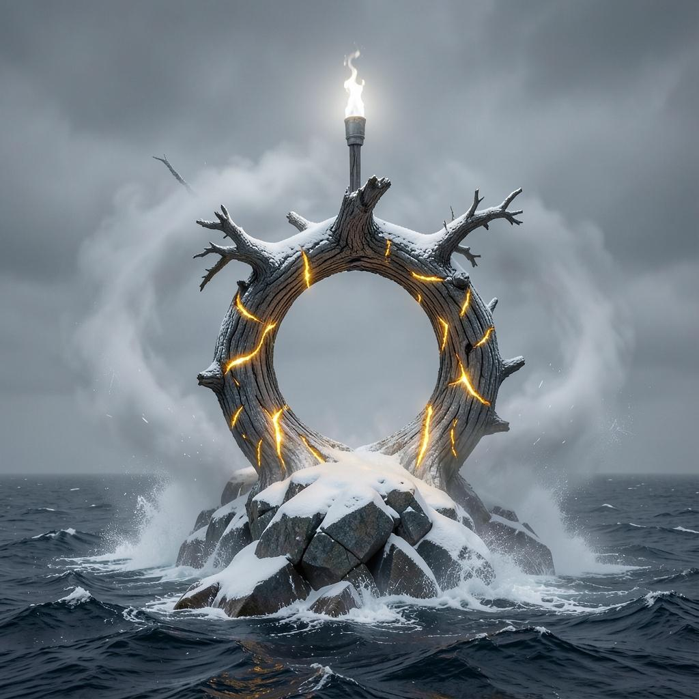

Unsolicited Symphonic Propaganda

The Homborsund Saga
An eight-part symphonic power-metal epic about a man who is, at the time of this writing, still thirty-nine.
So. What is this.
Somewhere between a birthday card and a minor act of aggression, this is a full studio album. Eight songs. Forty minutes. Double kick drums, a choir that will not be reasoned with, keyboards that clearly attended a Finnish conservatory, and a tenor who believes, sincerely, in you.
It exists on Spotify. Apple Music. Tidal. YouTube. Every store that would have us. A stranger in Ohio can, at this very moment, accidentally stream a five-minute power ballad about your specific personality and have no idea what they've done.
It is not a joke. The joke is that it is not a joke.
For whom, exactly
Son of the coast. Born in Kilsund, keeper of Homborsund, tamer of things that would kill a lesser man on contact. A friend of the kind that answers the phone when the phone should not, by any reasonable standard, be answered.
The album casts him, with zero restraint and full orchestra, as a returning hero — the Wanderer, the Guardian, the man the whole coastline sings for. He did not ask for this. That is rather the point.
(The page is at /ean, by the way. Eivind Andreassen-… you can see where that's going. Also, coincidentally, an international barcode standard — fitting, for a man now available as a scannable product.)
What the songs are about
There are eight chapters. Consider the following less a tracklist and more a diagnostic. You will recognise more of yourself than is strictly comfortable. Which one is which song — that, you'll have to earn by pressing play.
That's seven. The eighth is the one where everyone raises the torches. You'll know it when it lands on you.
A note on timing
This is not an error. We simply could not sit on a symphonic power-metal album for eighty-six days like some kind of functioning adult. Turning forty is a process; we've elected to begin the ceremony early and hold the note until October.
Enter the saga
Listen on SpotifyAlso on Apple Music, Tidal, YouTube Music, and every other shop that opened the door. Artist: Zoney 1337.